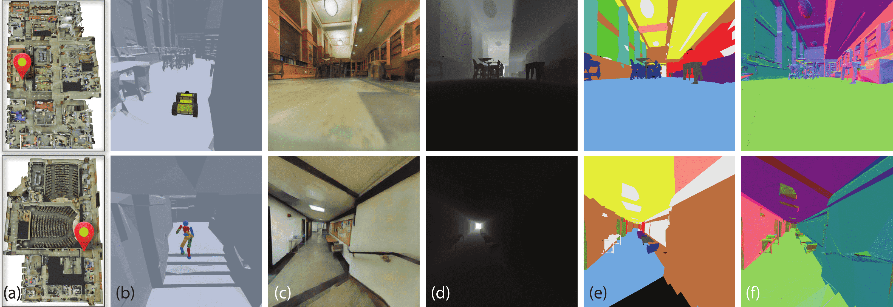
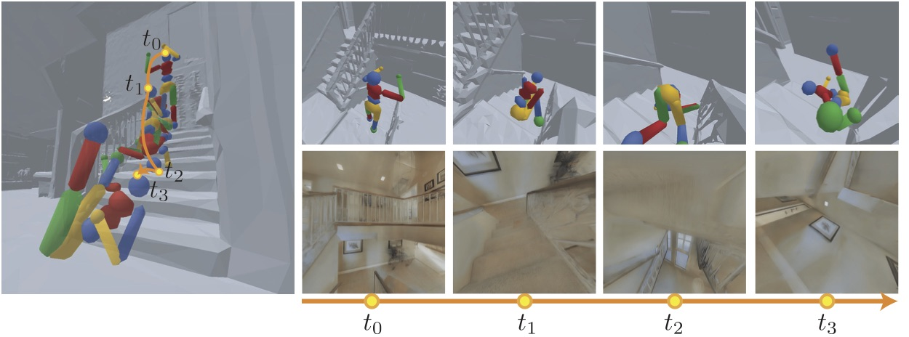

Education
Stanford University
Sep. 2018 - Jun. 2019 (projected), Computer Science M.S.
• GPA: 3.95/4.00
Sep. 2014 - Jun. 2018, Computer Science B.S. (honor), Electrical Engineering Minor
• Major GPA: 3.90/4.00, Overall: 3.85/4.00
In the past I worked at: Stanford Vision and Learning Lab (RA; 2017-2018) MuleSoft (intern; 2016) and Stanford Mobisocial Lab with Prof. Monica Lam (RA; 2015).
News:
- 2018.9 I will be leading Course Assistant for CS333: Safe and Interactive Robotics in Fall.
- 2018.8 Gibson Environment is at public release on github.
- 2018.6 Gibson Environment won 2018 NVIDIA Pioneering Research Award.
- 2018.2 Paper Gibson Env: Real-World Perception for Embodied Agents is accepted to CVPR 2018 as spotlight.
Publications
- Gibson Env: Real-World Perception for Embodied Agents Fei Xia*, Amir Zamir*, Zhi-Yang He*, Alexander Sax, Silvio Savarese, Jitendra Malik CVPR 2018 (Spotlight) [ Website | Code | Paper ]

Selected Projects
- Gibson Environment Open-sourced simulation platform for Real-World Active Perception Learning. Currently at beta release. I am one of the top contributors. [ Website | Code | Paper ]
- ThingPedia Opens-ource Platform For Personal Internet of Things Summer research with Prof. Monica Lam
- Unifile Semantic File Navigation System, CS 294S class project
